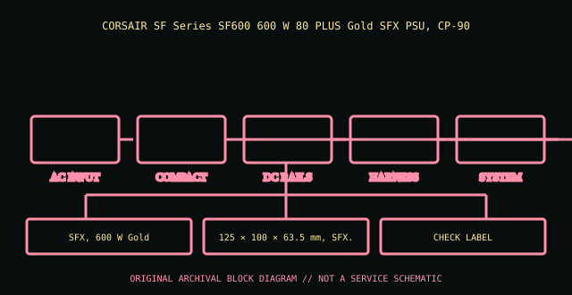

[ POWER CONVERSION // IDENTIFIED MODEL ]
Corsair SF600 Gold (CP-9020105)
CORSAIR SF Series SF600 600 W 80 PLUS Gold SFX PSU, CP-9020105. This entry covers the specific model or bounded historical system assembly identified here; suffixes and supplier revisions are not presumed equivalent.

HIGH-VOLTAGE SAFETY: Disconnect mains before external inspection. Never open a PSU. Internal capacitors can retain dangerous charge after disconnection. Do not probe or repair its interior; use qualified service or replace it.
Model-specific ratings & fit
| Manufacturer identity | CORSAIR SF Series SF600 600 W 80 PLUS Gold SFX PSU, CP-9020105 |
|---|---|
| Form factor / generation | SFX, 600 W Gold |
| AC input | 100–240 V AC; consult exact nameplate for current/frequency. |
| DC output | +12 V 50 A; +3.3 V/+5 V 20 A each; −12 V 0.3 A; +5 VSB 2.5 A; check combined output table. |
| Dimensions / mounting | 125 × 100 × 63.5 mm, SFX. |
| Connectors | Fully modular 24-pin ATX, CPU, PCIe 6+2, SATA and peripheral; use CP-9020105 cable list. |
| Revision distinctions | CP-9020105 SF600 Gold is not the 80 PLUS Platinum CP-9020182/other SF600 variant; do not assume same efficiency revision or accessories. |
Compatibility & safe handling
- Verify full model, suffix, region and revision using the actual unit nameplate and matching manufacturer manual. Wattage and plug shape alone do not establish compatibility.
- Check AC input range, rail and combined output limits, derating, signaling/pinout, cooling direction, mounting and system qualification before installation.
- PSU modular-side cables are model-specific. Never reuse an unapproved lead; a matching plug can carry a different pinout.
- Server hot-plug is permitted only in qualified host configurations and under the host’s documented redundancy/live-service procedure.
- Never open or internally probe the supply. Retire damaged, wet, burnt, corroded, modified or unidentified units.
Revision & archival notes
CP-9020105 SF600 Gold is not the 80 PLUS Platinum CP-9020182/other SF600 variant; do not assume same efficiency revision or accessories.
Archive full CP identifier, regional label, cable kit and manual revision; keep SFX intake unobstructed.
Photograph the full nameplate, model/FRU, supplier, revision/date code, line selector, cable ends, mounting orientation and source-document issue. Keep observed label data separate from test results.
Manufacturer or primary references
- Corsair SF600 Gold (CP-9020105) — manufacturer/product or primary technical referenceCORSAIR SF Series SF600 600 W 80 PLUS Gold SFX PSU, CP-9020105. Check the exact revision, region and system support information.
- Intel ATX / ATX12V Power Supply Design GuideReference for desktop ATX context only. Proprietary historical and hot-swap server outputs are not made interchangeable by ATX standards.
The specific PSU nameplate and corresponding model/service documentation remain controlling.